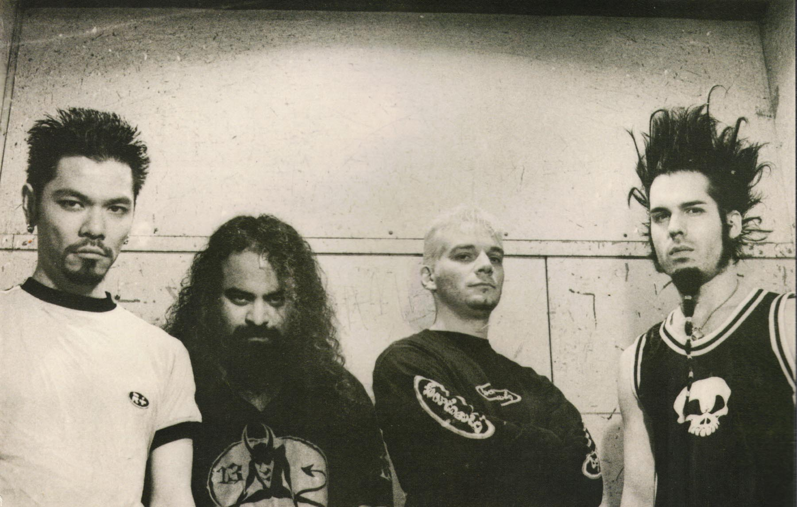

FLOW KRANIUM

I've been playing with Kaoss Edge for 7 years now. This picture was taken outside of the legendary WAREHAUS KORUPTION.

From left to right is myself, Malcon Flex, Krank Iodione, and our friend Jarvis Static from the band Static-X.
Kaoss Edge has made 10 albums and we're at work on another.
- HARD AS FUCK [kranial] - our first album. pretty rough
- DOG [kranial] - features Krank's dog Borkavitch. pretty ruff
- INSECTLIKE HUMANOID [skeletal] - first album with skeletal. hate those guys
- ONLY HALF OF US ARE HUMAN [skeletal] - Malcon left the band because we didn't play fast enough. maybe our worst album
- SLIME MAN [konfrontation] - sans Malcon, featuring the guy from Decapitators. forget his name
- RUINS2RUINS [larry's world] - this one was a solo project. Kaoss Edge had kinda fallen apart
- INSANITIZER [larry's world] - got the whole band back together. title track was our biggest hit
- BREAKSLIME [larry's world] - had the singles 'absorber' and 'expose the freak'
- PLATITUDES [konfrontation] - special project for konfrontation records, only had 2 songs 'looking glass' and 'apparitions'. some of my personal favorite Kaoss Edge
- BIOCONFUSED [larry's world] - slimiest record yet. got some of the sound we were going for on SLIME MAN but with Malcon's shredding
- FRIDGEHEAD [kranial] - hasn't been released yet. going to blow some minds. or freeze them